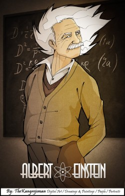
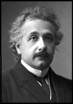
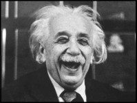

En honor a Albert Einstein
La realidad no es la que uno quiere que sea, la realidad simplemente se va presentando en una serie de realidades continuas, nos guste o no.
Albert Einstein es uno de los personajes intelectuales más usados para crear las más nefastas defensas de lo indefendible. Hay una historia infantil que todavía recorre iglesias, mentes crédulas, reuniones, correos electrónicos y publicidad en internet. En honor a Einstein, acá se va a desnudar esa estreñida historia en un resumen claro, señalando datos necesarios y muy importantes que surgen en este asunto espinoso. Aunque algunos ya conocen los errores del relato, y solo con saber de Albert Einstein se puede ver con claridad la falsedad, nunca está de más tocar otros detalles y divulgar información real para derrumbar las mentiras tan repetidas descaradamente y con gran desconocimiento. Cuenta la leyenda urbana que un niño llamado Albert Einstein desafió a su profesor ateo: y le ganó, probando la supuesta existencia de Dios, y en el proceso: la bondad de ese ser. De hecho, los vídeos de este relato tienen miles de visitas y compartidos en Youtube. Uno no sabe si reír o llorar. En fin, vamos al punto:
Un profesor universitario retó a sus alumnos con esta pregunta:
—¿Dios creó todo lo que existe?
Un estudiante contestó valiente: –Sí, lo hizo.
—¿Dios creó todo? Dijo el profesor.
—Sí señor, –respondió el joven–.
El profesor contestó:
—Si Dios creó todo, entonces Dios hizo el mal, pues el mal existe y bajo el precepto de que nuestras obras son un reflejo de nosotros mismos, entonces Dios es malo.
El estudiante se quedó callado ante tal respuesta, y el profesor, feliz, se jactaba de haber probado una vez más que la fe cristiana era un mito.
Otro estudiante levantó su mano y dijo:
—¿Puedo hacer una pregunta, profesor?
—Por supuesto, –respondió el profesor–.
El joven se puso de pie y preguntó:
—¿Profesor, existe el frío?
—¿Qué pregunta es esa? Por supuesto que existe, ¿acaso usted no ha tenido frío? El muchacho respondió:
—De hecho, señor, el frío no existe. Según las leyes de la física, lo que consideramos frío, en realidad es ausencia de calor. Todo cuerpo u objeto es susceptible de estudio cuando tiene o transmite energía, el calor es lo que hace que dicho cuerpo tenga o transmita energía. El cero absoluto es la ausencia total y absoluta de calor, todos los cuerpos se vuelven inertes, incapaces de reaccionar, pero el frío no existe. Hemos creado ese término para describir cómo nos sentimos si no tenemos calor.
—Y, ¿existe la oscuridad?, –continuó el estudiante–.
El profesor respondió: –Por supuesto.
El estudiante contestó:
—Nuevamente se equivoca señor, la oscuridad tampoco existe. La oscuridad es en realidad ausencia de luz. La luz se puede estudiar, la oscuridad no, incluso existe el prisma de Nicol para descomponer la luz blanca en los varios colores en que está compuesta, con sus diferentes longitudes de onda. La oscuridad no. Un simple rayo de luz rasga las tinieblas e ilumina la superficie donde termina el haz de luz. ¿Cómo puede saber cuán oscuro está un espacio determinado? Con base en la cantidad de luz presente en ese espacio, ¿no es así? Oscuridad es un término que el hombre ha desarrollado para describir lo que sucede cuando no hay luz presente. Finalmente, el joven preguntó al profesor:
—Señor, ¿existe el mal?
El profesor respondió:
—Por supuesto que existe, como lo mencioné al principio, vemos violaciones, crímenes y violencia en todo el mundo, esas cosas son del mal.
El estudiante le respondió:
—El mal no existe señor, o al menos no existe por sí mismo. El mal es simplemente la ausencia de Dios, es, al igual que los casos anteriores, un término que el hombre ha creado para describir esa ausencia de Dios. Dios no creó el mal. No es como la fe o el amor, que existen como existen el calor y la luz. El mal es el resultado de que la humanidad no tenga a Dios presente en sus corazones. Es como resulta el frío cuando no hay calor, o la oscuridad cuando no hay luz.
Entonces el profesor, después de asentir con la cabeza, se quedó callado.
El final de este vacío relato viene con la manipulación mediática y teológica… ¿Preparados? Dice: Tatatatán… “Ese niño era… Albert Einstein”. Ohhhhh.
Lo primero para resaltar es que se muestra el héroe y el villano estereotipado, el niño es creyente, por eso es bueno y gana. El profesor presume de su inteligencia, por tanto, es el malo que desafía primero, este se incomoda con las preguntas del niño, y como no es creyente, por consiguiente, pierde. Bueno, resulta que la historia es falsa, no hay ningún respaldo de que haya pasado eso, además, no es necesario, ya que no es prueba de algo serio. Resulta ser una leyenda urbana, usada como es obvio, para desprestigiar a quien no crea, y para supuestamente hacerlo ver como alguien que no puede contra los argumentos teístas.
Dicho disparate fue puesto en boca de Einstein, como si eso demostrara algo. Esto es simplemente deprimente. Antes de analizar la leyenda urbana, permítame detallar algunos puntos. Quien no conoce acerca del científico en estos temas, no sabe que Albert Einstein fue muy atacado por algunos curas, pastores y rabinos, entre otros, debido a que no creía en Dios, y mucho menos en el sinsentido que rige el cristianismo. A sus críticos (como a los que aún inventan que Einstein creía en Dios) les hubiese gustado que una de las mentes más brillantes que ha pisado la tierra, creyera en lo que ellos vendían. De hecho, en una ocasión, en 1945, se difundió un rumor criticando esa falta de creencia del científico, quien después de hablar del Dios de Spinoza y usar la palabra Dios como la combinación de las leyes del universo, pasando por admirar la visión panteísta de Dios hasta las metáforas en la mecánica cuántica con: “Dios no juega a los dados con el mundo”, y una cierta diplomacia para que no lo molestaran tanto… Einstein comenzó a lanzar sus críticas más fuertes y a desmentir a quienes le inventaron creencias que no tenía y que reiteró no tener hasta el final de sus días por el año 1955. También respondió a quienes le inventaban que ya había salido de su no creencia, para entregarse a la fe. ¿Quiere saber el rumor de 1945? Resulta que se dijo que un sacerdote jesuita hizo abandonar el ateísmo a Einstein, lo que hacía obvio que quienes lo querían atacar, lo iban a hacer leyendo la no creencia del científico sin los adornos que en ocasiones él ponía para evitar la tormenta. Y como aún se les agredía fuertemente a quienes confesaran ser ateos, crear un rumor con la palabra “ateísmo” era muy útil para despertar el desprecio, debido a que siempre se ha calumniado a los ateos diciendo que son malos, o algo tan ignorante como decir que los ateos creen en el Diablo y estulticias de ese estilo. Lamentablemente esa ignorancia aún vive. En fin, el rumor se extendió y llegó a oídos de Albert Einstein, lo cual no dejó pasar, y respondió aprovechando la información del suceso y la lectura de una carta recibida, esto fue en 1945, el 2 de julio, cuando le escribió a Guy H. Raner Jr. expresando 1:
“Recibí tu carta del 10 de Junio. Yo no he hablado con un cura jesuita en mi vida, y me deja de piedra que tengan el atrevimiento de contar estas mentiras sobre mí. Desde el punto de vista de un cura jesuita, soy y siempre he sido ateo, por supuesto. Tus contraargumentos me parecen muy correctos, y no se podrían formular mejor. Siempre es engañoso utilizar conceptos antropomórficos en relación con cosas que quedan fuera de la esfera humana: analogías infantiles. Debemos admirar con humildad la hermosa armonía de la estructura de este mundo, en la medida en que podemos aprehenderla. Y nada más”.
Einstein también fue contundente expresando que la idea de Dios le era ajena, y le parecía infantil e ingenua. Hay mucho material en cuanto a la “bondad” de Dios, o el comportamiento condicionado por un ser superior, pero probemos leyendo lo que le respondió a un pastor baptista:
“Yo no creo en la inmortalidad del individuo, y considero que la ética es un asunto exclusivamente humano, sin ninguna autoridad sobrenatural detrás”.
—De Albert Einstein, su lado humano.
A pesar de que el asunto de Einstein y Dios es evidente, vamos a trabajar, usted (o ustedes) y yo, el tema incluyendo la leyenda urbana del estudiante y el profesor, vamos a suponer que ese niño sí fue Albert Einstein, y que sí creía en Dios. Así, además de hacer más interesante el asunto, se hace necesario e importante para derrumbar una historia que lamentablemente tiene compradores en estas fechas tan evolucionadas. Quienes con leer el diálogo o saber de Einstein, tienen todo claro, tal vez podrán agregar algo a su análisis, y quienes han caído en el engaño y en la divulgación del mismo, entenderán mucho y no compartirán más ese tipo de horrores en la falacia de autoridad y la bajeza para justificar la existencia de Dios. Bueno, algunos harán caso omiso y sí seguirán con esa historia, sabemos que hay mucha gente que simplemente no tiene vergüenza 2. Leamos una explicación bastante concisa de esas leyes y naturaleza que Einstein a veces llamó Dios:
“… el Dios de Einstein se presenta como el propio mundo físico, con su estructura infinitamente maravillosa, que funciona a escala atómica con la belleza de un reloj de artesanía, y a escala estelar con la majestad de un enorme ciclotrón (…) Así pues, el Dios de Einstein equivalía a un sistema ordenado regido por reglas que podían descubrir quienes tuvieran la valentía, la imaginación y la tenacidad de no cejar su búsqueda”.
—De Einstein: the life and times, pp. 19-20. Ronald W. Clark
Tal vez dos de las frases más citadas y reconocidas, son las que precisamente muestran su proceso del paso filosófico, diplomático y posteriores revelaciones directas en el tema de Dios:
“Creo en el Dios de Spinoza, que se revela en la armonía ordenada de lo que existe, no en un Dios que se preocupa por los destinos y los actos humanos”.
—The New York Times, 1929, en respuesta a un rabino de la sinagoga institucional, Herbert Golstein, sobre si creía en Dios.
“Era mentira, por supuesto, lo que leyó usted sobre mis convicciones religiosas, una mentira que se repite sistemáticamente. Yo no creo en un Dios personal; es algo que no he negado nunca, sino que lo he expresado claramente. Si dentro de mí hay algo que se pueda llamar religioso, es la admiración ilimitada a la estructura del mundo en la medida en que puede revelarla nuestra ciencia”.
—Albert Einstein, carta del 24 de marzo de 1954; de Helen Dukas y Banesh Hoffman, eds., Albert Einstein, the Human Side, Princenton University, 1981, p. 43.
Y cómo olvidar ese guiño de ironía un año antes de morir, en una carta a Hans Muehsam, el 30 de Marzo:
“Soy un no creyente profundamente religioso… es un tipo de religión bastante nuevo”.
Hay bastante material. Puede buscar mucho más, por ejemplo, en: The Expanded Quotable Einstein y Albert Einstein, the Human Side. Y en las referencias de las frases que han sido compartidas acá. Pasemos a la historia en el salón de clase.
El primer detalle es que en unas historias lo ponen como estudiante de primaria y en otras como universitario. Bien, sin importar el grado académico, la historia tiene muchas fallas. La más grande es que muestra al profesor como alguien que no puede responder ante un discurso tan sencillo. Un profesor, que aparte de ser ateo, es profesional, solo sacará un bostezo cuando alguien intente explicar la existencia de “Dios”, diciendo, sin conexión alguna, que el frío no existe porque es ausencia de calor o que la oscuridad no existe porque es ausencia de luz. Obviamente quien escribió esa historia hizo su tarea, porque el frío es una sensación que se presenta cuando no hay calor, y hasta un bloque enorme de hielo tiene fundado su frío en la energía interna, la cual se relaciona al calor, pues el calor es un proceso en el que los cuerpos transfieren energía. Sin embargo, se debe recordar que el frío o el calor son sensaciones relativas en algunas ocasiones, importante resaltarlo.
El frío sí lo sentimos, por eso usamos chaquetas o algunas veces nos enfermamos por exponernos a bajas temperaturas. Frío y calor son palabras que se le dieron a esas sensaciones. Es cierto que en química y física el frío está estipulado como ausencia de reacciones químicas, de calor, porque es la forma en la que se estudia la energía, la cual asciende por el calor, y, el frío, es solo la descripción cuando esa temperatura es baja. Pero el personaje de la historia solo llega hasta ese hecho, olvidando que “calor y frío” son reales porque pueden sentirse y están presentes en los cambios térmicos, y que, además, sin importar la cultura, eso que se siente siempre será: frío o calor. Mientras que en el tema de Dios, unos creen en otro diferente dependiendo de la cultura y otros factores en el menú de miles de dioses, castigos y relatos. Si alguien dice que siente a Alá, el que siente a Cristo estará en desacuerdo, pero no tanto como el que siente a Brahmá o el que siente a Elvis Presley, además, María Luisa Piraquive se molestaría con todos porque Dios tiene una relación especial con ella, no solo conversan, sino que él le hace el favor de castigar a quien hable mal de ella y de su congregación.
Sumado a esto, la explicación del presunto estudiante olvida las acepciones que tienen las palabras en el inmenso pero limitado mundo del idioma. La Real Academia Española (RAE) en la primera acepción de frío, define: “Dicho de un cuerpo: Que tiene una temperatura inferior a la del ambiente”. Y calor es: “Sensación que se experimenta ante una elevación de la temperatura”. Ambos existen, porque existir, en sus tres aplicaciones, significa: “1) Dicho de una cosa: Ser real y verdadera; 2) Tener vida; 3) Haber, estar, hallarse”. No solo una, que sería suficiente, sino dos de estas acepciones muestran el cierre de este tema. Hay frío y calor, está y es real porque se manifiesta en nuestras sensaciones, haciendo que disfrutemos en la playa o que nos abriguemos cuando no aguantamos bajas temperaturas, el calor y el frío lo siente tanto el musulmán como el cristiano, el caballero del zodiaco o el hinduista.
Estos temas no son comparables con el tema de defensa de creencias, y tampoco tiene respaldo para construir esa analogía insulsa al decir que la ausencia del mal hace existir al ser de turno que el defensor quiera. ¿Cómo es que esa ausencia del mal no es Zeus, energía cósmica o simplemente lo obvio, el bien? Hablando de “ausencia”, ya casi llegaremos a ese punto, que es el más importante y más simple de destronar, el que muestra de forma sencilla lo infantil de esta historia que estamos analizando. Sobre todo, porque usarlo en esa historia y de la forma que se hizo, es una contradicción y un gigantesco error.
Vamos a “la luz” y “la oscuridad”, donde pasa lo mismo, no son comparables con el tema de defensa de creencias. La oscuridad sí está definida en todas sus acepciones como ausencia de luz, y la luz es, para nuestro ojo, la claridad que podemos percibir en cualquier espacio u objeto, pero, de nuevo: ¿qué tiene eso que ver con la analogía insulsa del mal y Dios? Pues bien, es muy fácil, si vamos a tomar historias como estas para convertirlas en lo que cada quien quiera, entonces vamos a hacer un ejercicio sencillo. Quite la palabra Dios de la historia, ahora, escriba Diosa, espere, mejor aún, vamos a ponerle nombre, escriba: Atenea. ¿Listo? Bueno, entonces ya sabemos que: “El mal es simplemente la ausencia de Atenea, es, al igual que los casos anteriores, un término que el hombre ha creado para describir esa ausencia de Atenea. El mal es el resultado de que la humanidad no tenga a Atenea presente en sus corazones”. Ya sabemos, el mal es la ausencia de Atenea, o como es llamada en otras de sus referencias, incluso, como su nombre es realmente conocido por la serie Los caballeros del Zodiaco, “Athena”. Atentos, alabada sea Athena.
Ahora el punto más importante: resulta que Dios es omnipresente, ¿recuerda? Vamos a escribirlo en mayúscula: O M N I P R E S E N T E, por lo tanto no puede haber algo que esté en ausencia de Dios. Repasemos, si algo o alguien es omnipresente (que está en TODOS lados), y además es, nada más y nada menos que: Dios, el Todopoderoso —otro pequeño detalle para que Ud. recuerde—, no puede haber algo que esté en A U S E N C I A de Dios, punto. ¿Adora usted las contradicciones? ¡Yo sí! Y la propia Biblia tiene miles de pasajes donde se demuestra que la bondad no tiene nada que ver con Dios, no olvide leerla siempre, es una de las herramientas para darse cuenta de los horrores que caen por su propio peso. Así que ese cuentico de que la maldad es ausencia de Dios es un desatino en toda su dimensión. Por cierto, es bueno recordar que el mismo Dios ordenó a Moisés y a todos sus profetas: asesinar y destruir.
Y no olvide ese amor en el diluvio, cuando ahogó a miles de niños y niñas, plantas y animales, salvando a Noé (tal vez porque sabía que un día Russell Crowe le pondría rostro, y todos sabemos que a Dios le gusta cómo actúa Russell Crowe). Ahora recuerde esa ocasión en la que mandó a su hijo a una misión suicida, porque fue lo más inteligente que se le ocurrió al ser más sabio del universo, el que envía plagas, el que, aburrido, hizo una apuesta para hacer sufrir a Job. Hablamos de ese Dios que promete el amoroso Apocalipsis, –y decimos: ¡Aleluya!– el que hace creaturas a su imagen y semejanza para exclamar que fue una buena creación, solo que luego se arrepiente y tiene que destruir lo creado por un ser perfecto, para después ver cómo se destroza la humanidad por defenderlo tanto en su forma sin forma, como en su misión suicida en forma de un hijo que tuvo con una homo sapiens –para competir con Zeus– que era él mismo y se mató para resucitar. Ese ser que nos hace una propuesta exquisita:
–O me aman o se queman, sufren, gritan, lloran, crujen sus dientes y mil dolores inimaginables en el infierno: por la eternidad. Amén.
Pero no lo olvide estimado lector, apreciada lectora: El mal es la ausencia de Dios.
«La falta de entendimiento de algo no es evidencia de Dios, sino evidencia de una falta de entendimiento».
—Lawrence Krauss, cosmólogo y físico teórico.
Notas
- 1
-
Las traducción de las frases de Albert Einstein citadas en este trabajo fue realizada por Jofre Homedes Beutnagel, para el libro: The portable atheist, de Christopher Hitchens, quien las citó en Inglés de: The Collected Papers of Albert Einstein, Hebrew University y Princeton University.
- 2
-
Este texto hace parte del libro Notas rebeldes para un mundo sumiso. Disponible a nivel internacional en Amazon: http://www.amazon.com/dp/1499371624, en España en http://www.amazon.es/dp/1499371624, entre otras plataformas.
© Cristhian Meneses. Publicado con autorización del autor.
Siga a Cristhian Meneses en Twitter
Volver a la sección Examinando las religiones
Comentarios
Comments powered by Disqus